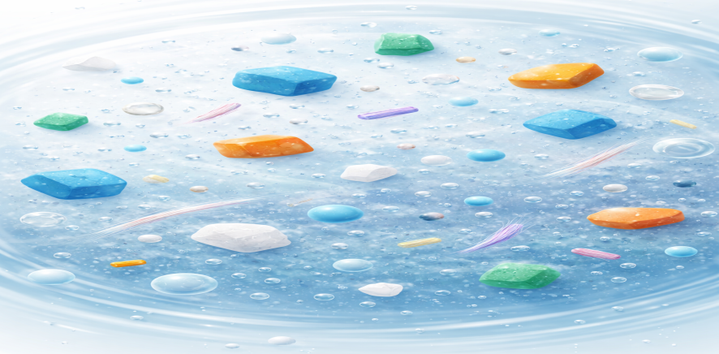
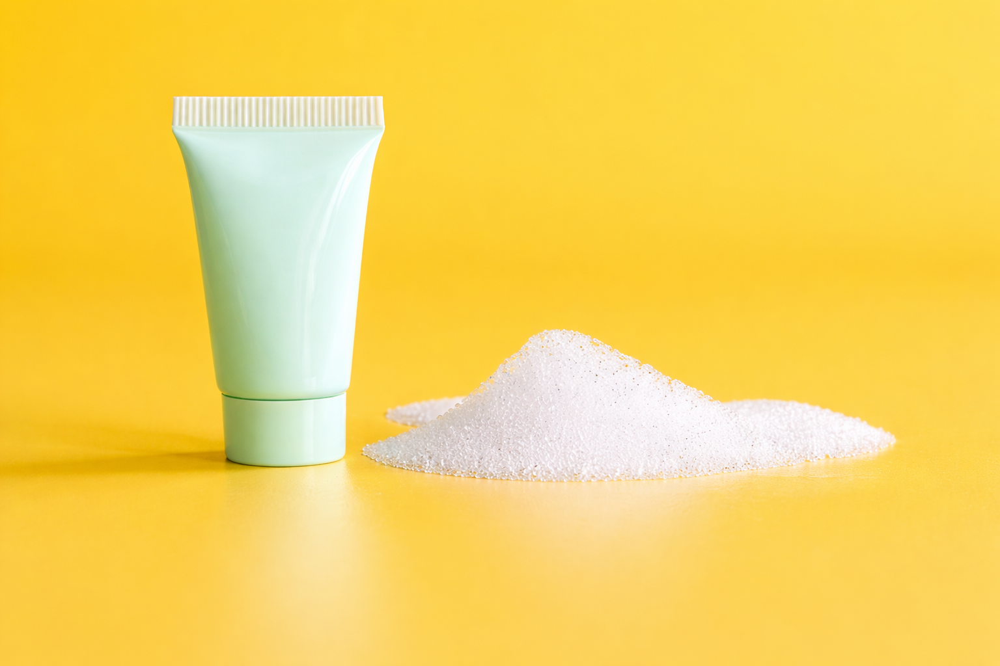

Plastic is an incredibly useful material, and global production exceeded 460 million tonnes (Mt) in 2019. However, only around 9% is recycled.
Plastics are made from different polymers, such as polypropylene, polyethylene and polystyrene, which are used in many everyday products.
Microplastics (MPs) are small plastic particles, typically ranging from 0.1 to 1000 μm in size. They can form when larger plastic materials break down due to environmental factors like UV radiation, wind, waves and mechanical friction.
These particles can be further broken down into even smaller fragments (<0.1 μm), known as nanoplastics (NPs).
Microplastics can be divided into primary and secondary types. Secondary microplastics form when larger plastic materials break down, while primary microplastics are produced directly in small sizes, for example as microbeads in cosmetics or fibres released from synthetic clothing.

Plastic does not biodegrade like organic materials. Instead, it breaks down slowly into smaller pieces over time. This makes plastic very durable and useful, but also creates challenges if it is not handled properly.